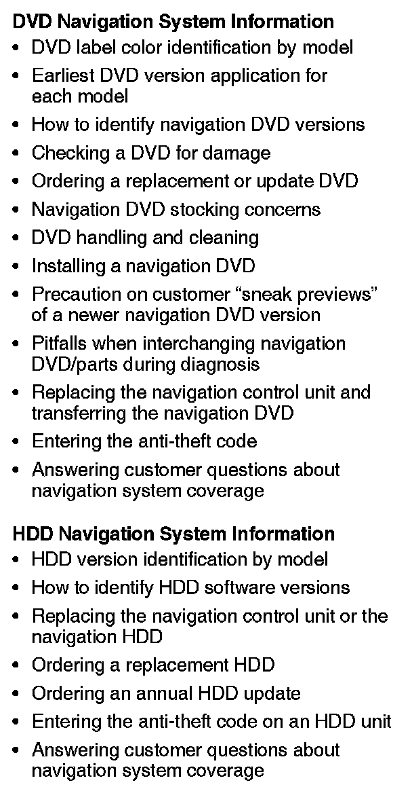
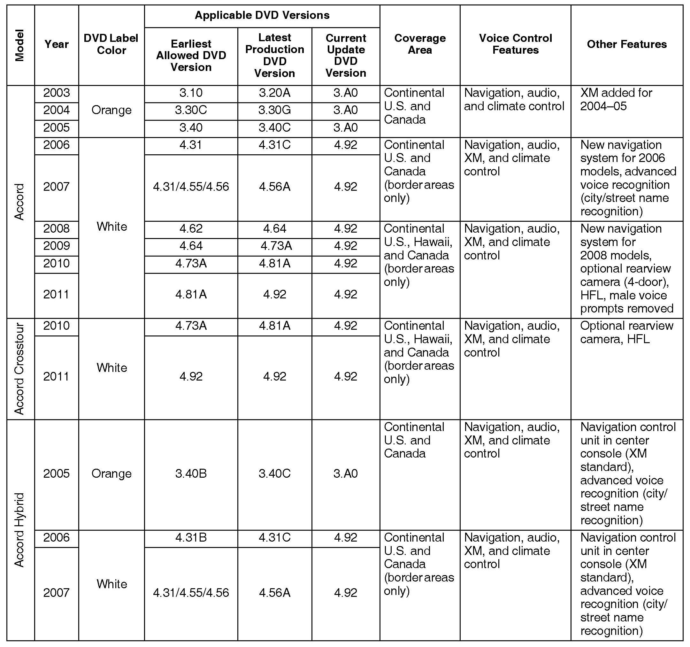
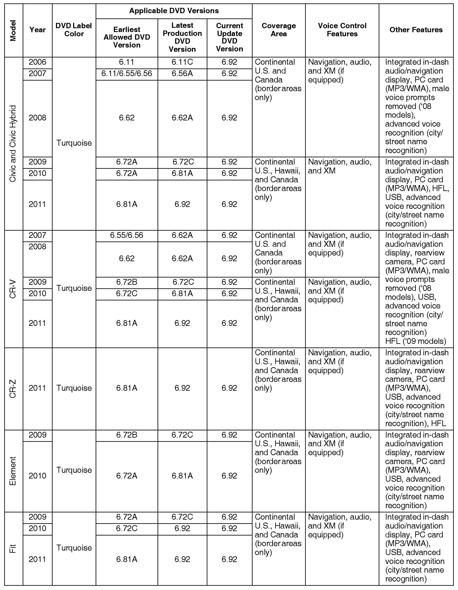
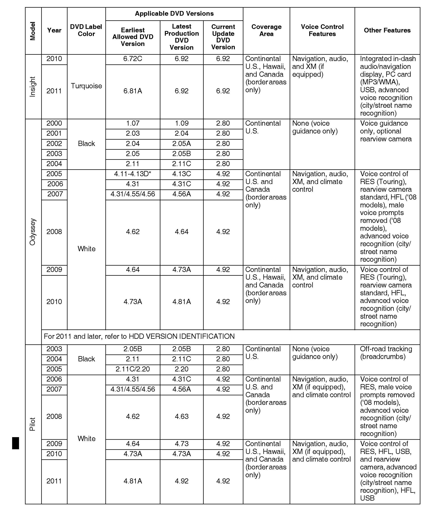
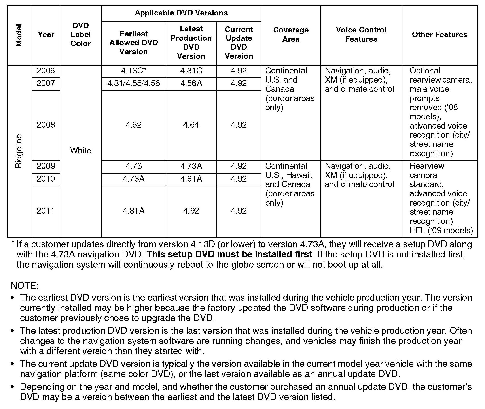
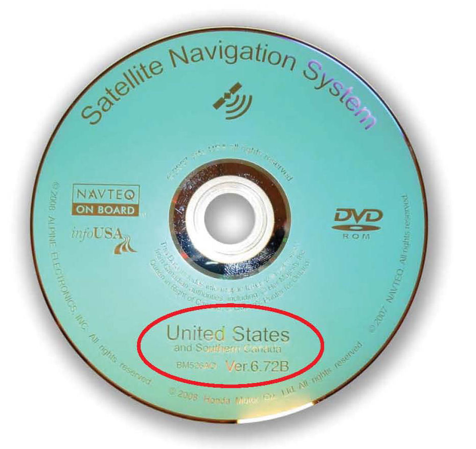
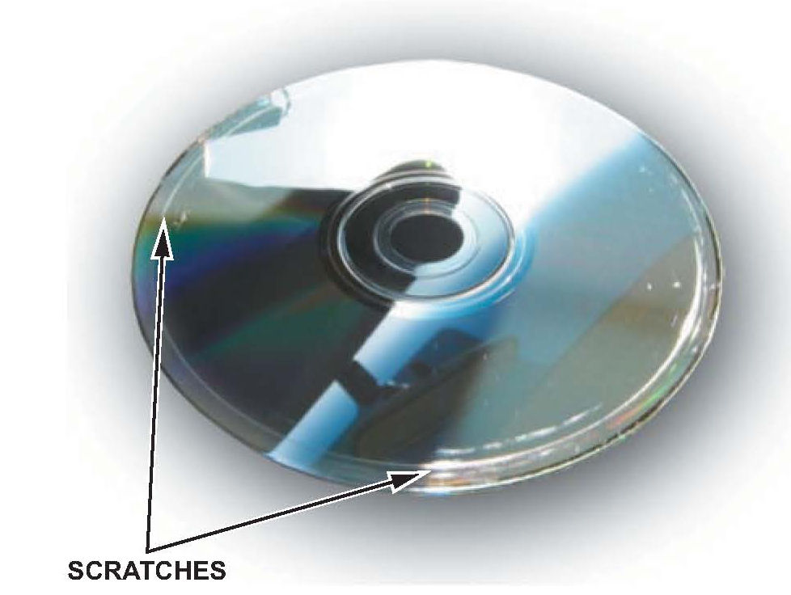
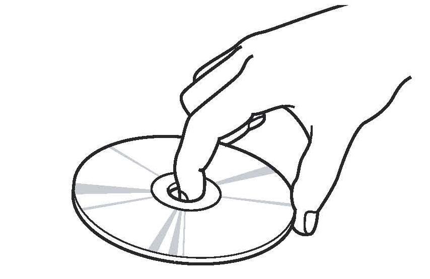
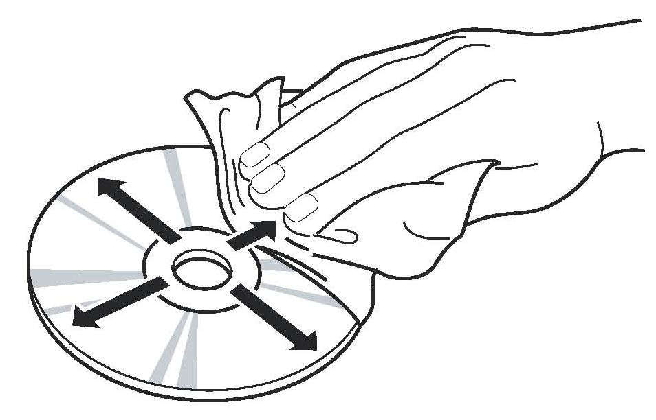
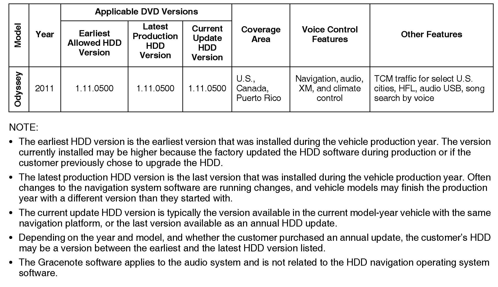

Navigation System - System Information
05-032September 13, 2011
Applies To:
See VEHICLES AFFECTED
Navigation System Information
(Supersedes 05-032, dated October 29, 2010, to revise the information marked by the black bars.)
REVISION SUMMARY
*Some of the applicable DVD versions for the 2009 Pilot were changed (see illustration 4).*
NAVIGATION BACKGROUND
American Honda has two types of navigation systems:
navigation DVD and navigation HDD.
For more information about the navigation systems and their operation, refer to the following resources:
^ Service Manual - Printed or on ISIS
^^3GQuick Start Guide or Technology Reference Guide
^ Online University - Use the keyword NAVI.
^ Navigation Manual - Besides the one that comes with the vehicle, the navigation system manual is also available online. Select SEARCH BY PUBLICATION, select Consumer Information select your applicable vehicle, then select Navigation Manual from the list.
^ Service Bulletins - Use the keyword NAVI.
^ ETM (electrical troubleshooting manual)
VEHICLES AFFECTED
^ 2003-11 Accord
^ 2005-07 Accord Hybrid
^ 2006-11 Civic
^ 2006-11 Civic Hybrid
^ 2007-11 CR-V
^ 2011 CR-Z
^ 2009-10 Element
^ 2009-11 Fit
^ 2010-11 Insight
^ 2000-11 Odyssey
^ 2003-11 Pilot
^ 2006-11 Ridgeline
WARRANTY CLAIM INFORMATION
None. This service bulletin is for information only. Refer to the flat rate manual whenever servicing or repairing the navigation system.

DVD Navigation System Information and HDD Navigation System Information
DVD LABEL COLOR IDENTIFICATION BY MODEL




Customers may obtain navigation DVDs from a variety of sources (friends, Internet auctions, etc.) outside of the normal ordering process. If they install an incorrect DVD, it can produce an error message, or cause the navigation system to malfunction. Use the following table to identify the label color used for each model.
NOTE:
If the vehicle you are looking for is not on this list, it may have an HDD navigation system. Refer to HDD VERSION IDENTIFICATION.
EARLIEST DVD VERSION APPLICATION FOR EACH MODEL
Each navigation system DVD contains a map/POI (point of interest) database and the navigation system software for each model that it supports. Inserting an older DVD (such as an earlier version than indicated in the table) can cause problems since it lacks the software to provide the specific features needed for that model. Unfortunately, the navigation software may not detect or warn you that the version is outdated, and it may even appear to operate normally.
NOTE:
Replacing a DVD with a higher version number is not always justified. A higher software version DOES NOT necessarily mean it contains newer software for your model. The DVD contains software for ALL models that use the same color DVD, and a revised number may or may not have software fixes or upgrades for the model in question.
The following symptoms may indicate that an outdated DVD is being used:
^ A Honda model navigation screen may display an Acura logo while booting up.
^ A newly introduced model feature (for example, XM radio or HFL) may not display properly, and Extension may display instead.
NOTE:
Extension may be displayed when using Music Link, but should never be displayed when XM or USB is selected.
^ The current street (the street being driven on) may not appear properly at the bottom of the map screen display when the vehicle is driven on a main road.
NOTE:
If necessary, compare the navigation system operation to a same model vehicle with a current DVD.
HOW TO IDENTIFY NAVIGATION DVD VERSIONS
To determine the navigation version on a particular model, start the engine, then locate the navigation control unit (see the appropriate service manual). Open the DVD door, and push the eject button to eject the DVD. Hold the DVD by the edges, and check for these items:
^ The label color (see the chart on the previous page for model application).
^ Read the DVD version listed on the bottom of the label, and note it on the repair order. You will need this version number in these instances:
- To verify that the DVD version is appropriate for the vehicle
- Any time you call Tech Line regarding a navigation system issue
- To answer customer inquiries concerning update or coverage issues

NOTE:
Customers may obtain DVDs from sources outside the normal ordering process. If you determine this is the case, recommend that your customer purchase the appropriate DVD from the Honda Disc Fulfillment Center (see ORDERING A REPLACEMENT OR UPDATE DVD).
CHECKING A DVD FOR DAMAGE
Check the underside of the DVD for signs of mishandling. Deep scratches or fingerprints can cause random lock-ups, reboots, and DVD read or format errors.

NOTE:
A damaged DVD is not covered under warranty unless the disc is damaged by the navigation unit. Damage by the navigation unit typically appears as circular scratches caused by something rubbing against the DVD as it spins. The damage may appear as arcs or complete circles on the DVD reading surface. Refer to Service Bulletin 08-051, DVD Head Error, or No Route Displayed, and Navigation DVD Is Scratched, for more information.
^ Verify that the underside of the DVD is silver, and not a copy with a bluish color. Copies will not work properly and can cause other symptoms that mimic hardware problems.
^ If the DVD is dirty, go to DVD HANDLING AND CLEANING.
^ If the DVD is defective, or has any of the issues mentioned above that is not covered by a service bulletin, return the vehicle to your customer and recommend that they order the proper DVD from the Honda Disc Fulfillment Center (see ORDERING A REPLACEMENT OR UPDATE DVD).
NOTE:
If the navigation control unit is found defective (through the appropriate service manual troubleshooting procedures) and the DVD will not eject, order a replacement control unit, and also order a DVD from the Honda Disc Fulfillment Center as navigation units do not come with a navigation DVD.
ORDERING A REPLACEMENT OR UPDATE DVD
To order a navigation DVD, you can call the Honda Disc Fulfillment Center. The Fulfillment Center knows the correct color DVD application for each vehicle and can provide the latest version. To order online, go to and select the model and year to find updates. The customer's navigation manual provides additional ordering and installation information. This information is located in the Customer Assistance section.
NAVIGATION DVD STOCKING CONCERNS
Never stock navigation system DVDs, as software versions are constantly updated. Some dealerships also remove the DVDs from new or used vehicle inventory to prevent theft by storing them in a common locked location, then reinstall them when the vehicle is sold. Since the various navigation systems are version-sensitive (meaning that even if the correct color DVD is used, an older version may not work), stocking navigation DVDs or storing navigation DVDs in a common location can result in any of these problems:
^ Incorrectly colored DVDs being put into navigation vehicles. This either causes the system to display error messages, or causes system malfunctions that mimic a hardware problem. This results in the customer driving away with a malfunctioning navigation system.
^ The DVD version is out-of-date or incompatible with a particular model. This inconveniences your customer by delaying the repair, or by causing additional (and unnecessary) comebacks to your dealership.
^ The customer experiences bugs or other issues that have already been resolved in later versions currently available at the fulfillment center.
These ordering procedures are recommended:
^ Always order navigation DVDs on an as-needed basis. During a typical model year, each color DVD may undergo half a dozen "software only" version upgrades to fix minor issues on some or all models the DVD supports. This is normal. Usually, only the letter at the end of the version number changes, while the database (maps and P0Is) remain unchanged through the year.
^ Never promise your customers future free updates.
There are no free programs for updating the navigation DVD. Update DVDs are generally available for purchase each fall. The online DVD order site provides information when an update for a particular color DVD is available.
NOTE:
^ Refer to the version chart in this service bulletin when ordering any navigation system DVD.
^ Damaged discs are not warrantable unless they are damaged by the navigation system.
DVD HANDLING AND CLEANING

To avoid damaging or leaving fingerprints on the DVD, always handle it by the edges, and place it in a jewel case whenever it is outside the navigation control unit. Deep scratches or fingerprints on the back of the DVD can cause intermittent rebooting or other system errors.

Smudges and fingerprints can be carefully removed using a mild cleaner and soft cloth designed to clean eyeglasses. To clean a DVD, first apply the cleaning solution to the DVD, and using a clean soft cloth, very gently wipe across the DVD from the center to the outer edge, never in a circular motion.
INSTALLING A NAVIGATION DVD
1. Park the vehicle outside, and start the engine.
2. Eject the old DVD.
3. Install the new navigation DVD. Be sure to close the door on the navigation control unit.
4. Select OK on the disclaimer screen, then turn the engine off. Wait 1 minute, and restart the engine.
5. Select OK on the disclaimer screen.
6. Drive the vehicle on a mapped road until the road name appears at the bottom of the map screen. The system is now map-matched.
PRECAUTION ON CUSTOMER "SNEAK PREVIEWS" OF A NEWER NAVIGATION DVD VERSION
Your customer might request a look (or "sneak preview") at features in the latest navigation software. You should never preview a navigation DVD in a customer's vehicle. Inserting a new DVD installs the latest software from the DVD into the memory of the customer's navigation system. When the original DVD is reinstalled, the newer software remains in memory and is often incompatible with the customer's original DVD map and P01 database.
If your customer wishes to see the latest navigation coverage or software features, demonstrate it on an in-stock vehicle that already has the latest DVD version.
If a newer version is loaded accidentally, either by the dealer or the customer, one possible remedy is to enter the navigation diagnostic mode's Version screen and do a forced download. Refer to the iN for applicable patches that may need reinstalling.
If a forced download does not reinstall the original software, the navigation system may need to be replaced. This is not covered under warranty.
PITFALLS WHEN INTERCHANGING NAVIGATION DVD/PARTS DURING DIAGNOSIS
When troubleshooting navigation system problems, ensure that the known-good vehicle is the same software version year and model as the vehicle being serviced. Mixing incompatible navigation DVDs or other system components can delay the troubleshooting process by causing side effects unrelated to the original problem. See the table under DVD LABEL COLOR IDENTIFICATION BY MODEL.
REPLACING THE NAVIGATION CONTROL UNIT AND TRANSFERRING THE NAVIGATION DVD
If your diagnosis determines the customer's navigation control unit is faulty, you will need to order a remanufactured replacement navigation unit (in warranty), or send it out for repair (out of warranty). Refer to Service Bulletin 06-001, Audio, Navigation, and RES Unit In-Warranty Exchange, and Audio and DVD Player Out-of-Warranty Repair The order procedure on the iN is designed to minimize unnecessary replacement of parts due to customer settings, unfamiliarity with system operation, or software/database issues that cannot be resolved by hardware replacement. The form asks for the following navigation information:
^ The customer's DVD color and version number on the label, and condition of the DVD (inspection for scratches).
^ The customer's complaint, symptom, and other details to allow duplication of the issue by the factory.
^ The results of the diagnostic procedure according to the service manual.
This information will help the remanufacturing center and the factory understand the problem and properly repair the core.
Replacement navigation control units do not come with a DVD because the parts center has no way of knowing the customer's current DVD version. When the new control unit arrives, and before disconnecting the original control unit, do this:
1. Save the customer's data (if equipped) using the Save Users Memory procedure:
^ Refer to the applicable service manual, or
^ Online, enter keywords NAVI DIAG, select Navigation System Diagnostic Mode from the list, and look for Save Users Memory.
2. With the engine running, open the control unit door and eject the DVD from the original control unit. To avoid scratching or damaging the DVD, temporarily place the DVD in a jewel case.
NOTE:
If the DVD will not eject, write that information clearly on the core return form, and order a DVD from the Honda Disc Fulfillment Center.
3. Install the control unit. Follow the procedure in the navigation section of the appropriate service manual.
^ Refer to the applicable service manual, or
^ Online, enter keywords NAVI REMOVAL, and select Navigation Unit Removal/Installation from the list.
4. Reinstall the customer's original DVD, verifying that the DVD is free of deep scratches or smudges.
5. Check online for service bulletins prescribing patches, if any, that should be applied to the replacement control unit.
6. Park the vehicle outside, and do the initialization. Online, look up the navigation system PDI service bulletin that applies to the customer's vehicle. This assures that all components connected to, or controlled by, the navigation unit are working properly. The PDI procedure includes a short test to ensure that the navigation unit has synchronized its maps with the current location obtained during the GPS initialization (map- matching).
ENTERING THE ANTI-THEFT CODE
Any time power is disconnected from the navigation control unit, the 4-digit anti-theft code must be entered on the navigation system display. This 4-digit code can be found on a small code card or label in the glove box. Enter the 4-digit code, then select Done.
If you cannot find the navigation system anti-theft code, use the iN to look it up. You need the serial number for the navigation control unit to do this. There are two methods to obtain the serial number:
^ For the latest navigation systems (white, turquoise, and orange-colored DVDs) you can view the serial number without removing the navigation unit by entering the diagnostic mode:
- Refer to Anti-theft Feature under General Troubleshooting Information in the navigation section of the applicable service manual, or
- Online, enter keyword THEFT, and select The navigation anti-theft code card is lost or missing (With Navigation) from the list.
^ For 2nd-generation navigation systems (identified by the black DVD used with them), the code is located on the underside of the navigation control unit.
The iN may display more than one code for a given serial number. This is because serial numbers are not unique. You may have to try more than one 4-digit code if listed. If no code is shown, or if the code(s) given do not work, contact the American Honda Warranty department and ask them to verify the code(s). If the code "0000" (four zeroes) works, then replace the navigation control unit.
When you replace a navigation control unit, be sure to remove the old code card, and give the customer the new anti-theft security code card.

HDD VERSION IDENTIFICATION BY MODEL
HOW TO IDENTIFY HDD SOFTWARE VERSIONS
To determine the navigation software version in a vehicle:
^ Make sure you are on the map screen, then press INFO.
^ Push the interface dial to the right to select OTHER.
^ Rotate the interface dial to highlight System/Device Information, then press the ENTER button.
^ The following information appears:
- Software version
- Database version
- Device number
^ To exit, press the MAP/GUIDE button.
Software Patches
Occasionally, problems are discovered after a software version is released, either with the original software version that came with the vehicle, or a map update purchased by the customer. Many software related problems can be repaired with software updates (patch CD).
Before assuming a navigation problem is hardware related, check the iN for software updates, and see if your customer's problem is resolved with a patch disc.
REPLACING THE NAVIGATION CONTROL UNIT OR THE NAVIGATION HDD
The audio-navigation unit and HDD are only available as separate parts. There is a built in anti-theft protection referred to as "mating" to limit replacing an HDD or audio-navigation unit. Refer to Audio-Navigation Unit and HDD Service Precautions in General Troubleshooting of the applicable service manual for more information.
If you substitute an audio-navigation unit for troubleshooting, you must substitute a combined audio-navigation unit and HDD. Do not substitute the audio-navigation unit or HDD separately.
If your diagnosis determines that the audio-navigation unit is at fault, the replacement unit does not come with an HDD. Transfer the original HDD to the new audio-navigation unit. All the customer's settings, music, and personal information are transferred with the HDD.
NOTE:
If the HDD is not transferred to the replacement audio-navigation unit, an HDD Access Error appears on the display.
ORDERING A REPLACEMENT HDD
If you need to replace the HDD, it is available through the parts ordering system as a restricted part. You will need the vehicle VIN to complete the order. The VIN allows the supplier to confirm the current navigation software version being used by the customer. When the HDD arrives at the dealership, install the HDD in the audio-navigation unit, then check any official Honda service website for any patches or updates related to the navigation system.
NOTE:
If the HDD is not transferred to the replacement audio-navigation unit, an HDD Access Error appears on the display.
ORDERING AN ANNUAL HDD UPDATE
To order a navigation update disc, you can call the Honda Disc Fulfillment Center. To order on-line, go to the website, and select the model and year to find updates. The customer's navigation system manual provides additional ordering and installation information. This information is located in the Customer Assistance section.
Follow the instructions included with the update disc on how to load the update information into the navigation system.
ENTERING THE ANTI-THEFT CODE ON AN HDD UNIT
Any time power is disconnected from the navigation control unit, you need to bypass the anti-theft circuit. There are two methods:
^ Press and hold the power knob for about 5 seconds. The audio-navigation unit compares the VIN in its internal memory with the VIN from the PCM. When the two match, the anti-theft circuit is bypassed.
^ There may be occasions when you are prompted to enter the code. In these cases, enter the anti-theft code on the navigation system display. This code can be found on a small code card or label in the glove box. Enter the code, then select Done.
If the code card is lost or unavailable, you can get the code from the iN (Interactive Network) using the navigation system serial number. The system serial number can easily be obtained without removing the navigation unit. To get the serial number and the code, do this:
^ Press and hold the MENU, MAP/GUIDE, and CANCEL buttons at the same time.
^ At the Select Diagnosis Items screen, select Detail Information & Settings, select Unit Check, then ECU INFO. The system runs a brief diagnostic, then the navigation unit serial number is displayed at the bottom of the screen.
^ Use the navigation Anti-theft code inquiry option on the iN to look up the 5-digit navigation anti-theft code. The iN may display more than one code for a given serial number. This is because serial numbers are not unique. You may have to try more than one 5-digit code if listed.
If no code is shown, or the code(s) given do not work, call the American Honda Warranty department. Do not call Tech Line.
When you replace a navigation control unit, be sure to remove the old code card, and give the customer the new anti-theft security code card.
ANSWERING CUSTOMER QUESTIONS ABOUT NAVIGATION SYSTEM COVERAGE
Some customers may ask questions regarding a city, address, or P01 (point of interest) covered by the navigation system. It is better to verify a coverage question on an actual vehicle than to disappoint your customer by promising coverage that may be incomplete or missing in their area. The following suggestions can be used to answer coverage inquiries from your customer.
^ How do I find the local address of a business that is part of a national chain (for example, Starbucks)?
There are three ways to find the local address to businesses:
- If you know the phone number of the business, select Phone Number and enter the 10-digit phone number (area code plus seven-digit number).
- Select Name and enter Starbucks. For more common business names, like McDonald's, you may have to search through a list that includes other businesses like McDonald's Welding, McDonald's Automotive, etc.
- With DVD: Select Category, then Restaurant.
Enter the keyword Star. The resulting list includes all restaurants that have the letters Star anywhere in the name.
NOTE:
This search method may not work on all 2004 and earlier vehicles.
- With HDD: Select Place Category, then
Restaurant. Under Sub category, select All
Types, then Place Name. Enter keyword Star.
The resulting list includes all restaurants that have
the letters Star anywhere in the name.
^ Is my address covered by the navigation system?
Using a current production vehicle (of the same model), try entering the customer's address (street first) to see if their area is covered. Always enter the street first, because sometimes their city may be included in a neighboring township, or under some larger metropolitan city name. If the address is shown in a later year vehicle but not your customer's vehicle, recommend that your customer purchase an update.
If the customer's address is not in the current database, you can store the customer's address as a map input. Refer to Viewing/Saving the current location in the navigation manual.
^ Is my city covered by the navigation system?
For general questions about whether a city is covered, view the map coverage link on the DVD order site. On the site, you enter a year and model, and then click on the Coverage link. You then select a state or province, and the cities are listed. Of course, this does not guarantee that the customer's road or address is in the system. Verifying on an actual production vehicle is always the best guarantee that your information is accurate.
^ The gas station on my corner is now a restaurant. Why is it still incorrect in the navigation system?
For P0I-related customer questions, explain that businesses are constantly changing, and there can be a considerable lag in updating the millions of POIs in the system. The database is updated annually, and the best way to verify whether the P01 is accurate is to verify the inquiry on a current production vehicle.
^ How do I update my Gracenote software?
While this is not a navigation system software, customers may ask questions about it. Refer to the audio section of the applicable owner's manual.
Answers to these and other questions regarding coverage can be found in these locations:
^ In the Frequently Asked Questions section of the navigation manual.
^ At the online DVD order site, by clicking on the FAQs link (see ORDERING A DVD).

Disclaimer